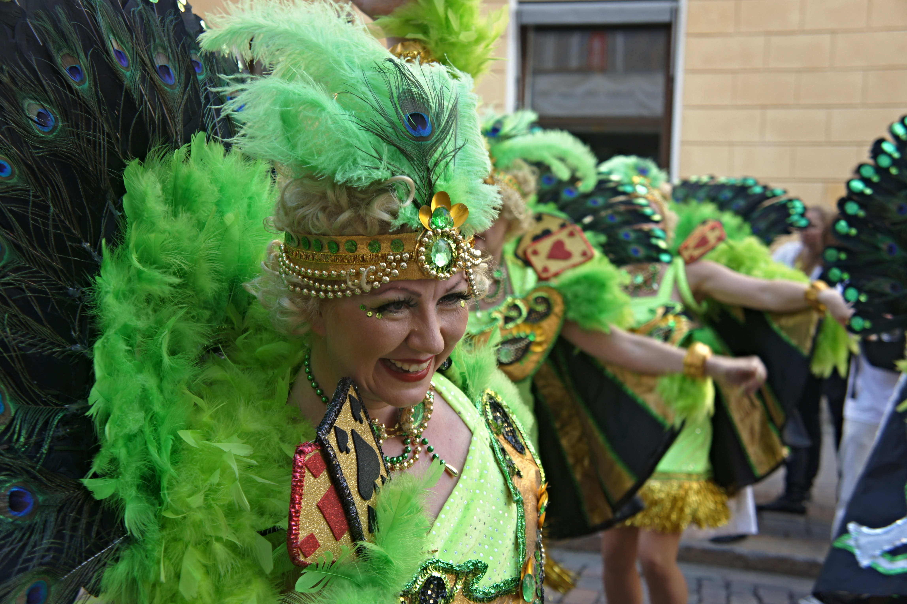

Because its population is so diverse, we can see the same happening in the case of music as well. That is
its music is a reflection of its people and diversity. The music of Brazil is
also heavily influenced by American, African, and European forms. For the Brazilian culture, music is of
extreme importance. Brazil has many genres - more than 15!
Samba - It is the most important cultural music in Brazil.
music. This type of music is mostly played during carnivals due to festive themes. However the origins of
Samba has a very dark past. It was the music of African slaves brought in to work in the plantations. Samba
was called the father of pleasure and son of pain by Caetano Veloso. While
Samba is a very important cultural form of
Brazilian music has gained popularity all over the world because of its use in flamboyant carnivals.
Choro - Choro can be called the instrumental cousin of Samba. It has means crying or
sobbing even though it has happy undertones to it. It is produced by using a flute, a guitar, a clarinet, and
a cavaquinho – a miniature guitar.
It has also been coined as Jazz of Brazil.